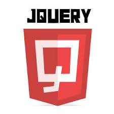

Pengertian HTML
juni 3, 2017 views:1,897,678HTML merupakan bahasa pemrograman yang digunakan untuk pembuatan website, bahasa ini kepanjangan dari hyper text markup languange
Lanjut baca

Pengertian Jquery
juni 3, 2017 views:1,897,678Jquery merupakan library javascrip yang dikembangkan oleh devoloper web, jquery ini membantu memudahkan untuk pemenggilan library javascript
Lanjut baca
Pengertian CSS
juni 3, 2017 views:1,897,678CSS atuu cascading style sheet merupakan bahasa pemrograman yangdigunakan untuk menghias HTMl agar terlihat menarik dan rapi dilihat oleh user dalam website
Lanjut bacaWho we are?
Joko ardiyanto merupakan seorang yang bergulant dan kepenge bisa dalam pemrograman web dan bidang webdevolopment dia belajar dan ingin menjadi seorang web devloper profesional